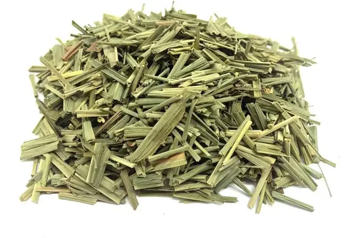
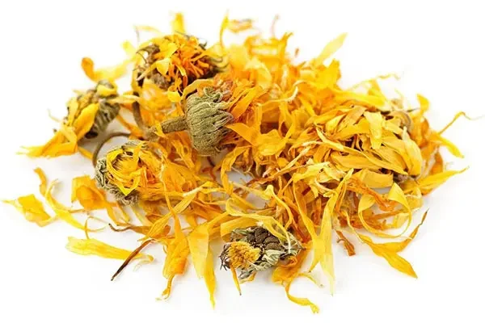

حشيشة الليمون
نبات عطري بنكهة الليمون لمشروبات الأعشاب وخلطات النكهات.
ملف المنتج ↗استكشف المكونات النباتية المدرجة للاستخدام في الشاي والمشروبات العشبية. ناقش الدرجة والمواصفات والملاءمة مع فريق التصدير.
تخضع الملاءمة الفعلية للمواصفات والمتطلبات التنظيمية للمنتج النهائي.

نبات عطري بنكهة الليمون لمشروبات الأعشاب وخلطات النكهات.
ملف المنتج ↗
أوراق عطرية لخلطات التوابل ومشروبات الأعشاب.
ملف المنتج ↗
نوع من النعناع ذو نكهة عطرية منعشة للمشروبات وخلطات النكهات.
ملف المنتج ↗
أوراق عطرية مميزة لخلطات التوابل ومشروبات الأعشاب.
ملف المنتج ↗
نعناع للمشروبات وخلطات النكهات؛ يتم تأكيد النوع والدرجة حسب الطلب.
ملف المنتج ↗
زهور نباتية لمشروبات الأعشاب. يُحدد المشتري الشكل والحجم المطلوبين.
ملف المنتج ↗
زهور نباتية لتطبيقات مختارة في مشروبات الأعشاب والمكونات النباتية.
ملف المنتج ↗
مكوّن نباتي ذو نكهة حمضية لمشروبات الأعشاب وتصنيع المشروبات.
ملف المنتج ↗
بذور عطرية للتوابل والمخبوزات ومشروبات الأعشاب.
ملف المنتج ↗
مكوّن عطري بنكهة قريبة من اليانسون؛ يتم تحديد الجزء والشكل المطلوبين.
ملف المنتج ↗
مكوّن عطري لمشروبات الأعشاب وخلطات نكهات المخبوزات.
ملف المنتج ↗
مكوّن حمضي مجفف لخلطات النكهات؛ يتم تأكيد طريقة التجفيف والشكل المطلوب.
ملف المنتج ↗
جذر نباتي لخلطات النكهات والمشروبات؛ يتم تأكيد الهوية والمتطلبات.
ملف المنتج ↗
نبات عطري برائحة الليمون للمشروبات العشبية.
ملف المنتج ↗